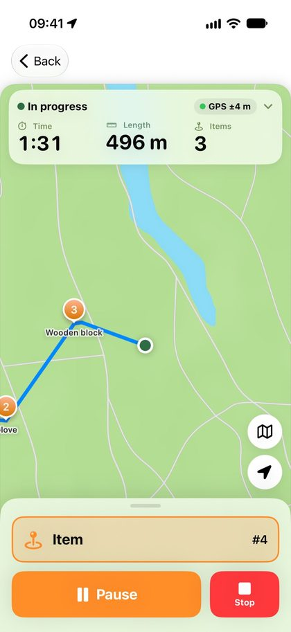
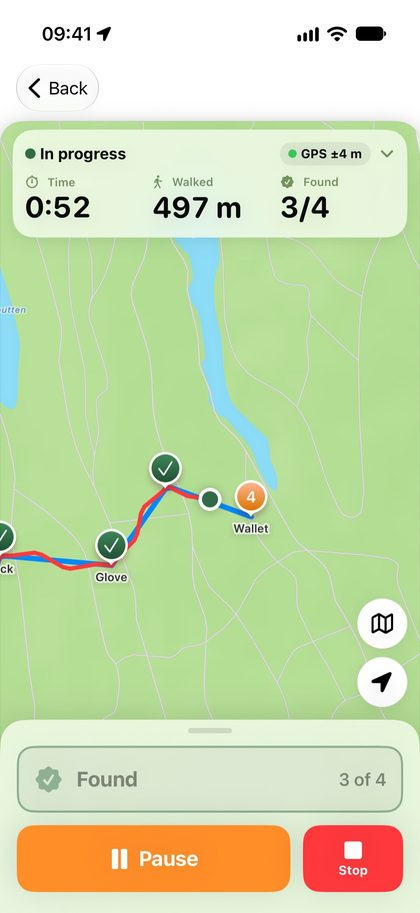
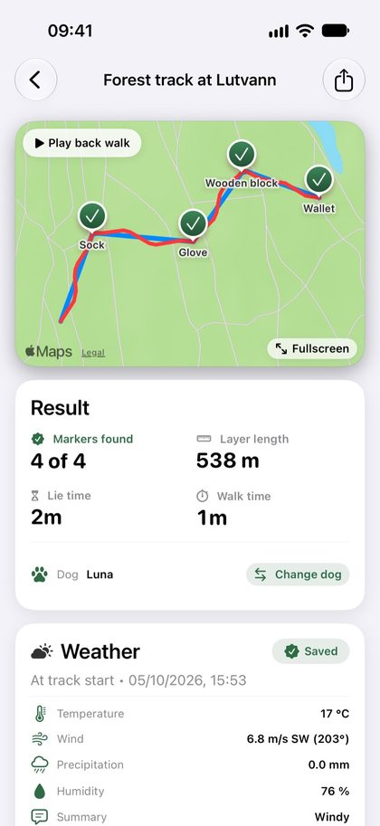

iOS app for tracking training
Follow the track. See the progress.
Trax helps you lay tracks, train your dog and follow its progress over time.



Support
Need help?
Send us an email and we'll reply as soon as we can, usually within two business days. Please describe what you were trying to do, which iPhone and iOS version you have, and attach a screenshot if possible.
Frequently asked questions
The track is inaccurate. Make sure Trax has location access “While Using the App” and that Precise Location is turned on under Settings › Trax › Location. GPS is less accurate in dense forest and between tall buildings.
How do I delete my data? Everything is stored only on your phone. You can delete individual sessions in the app, or delete the app to remove all data permanently.
Can I move my data to a new phone? Your data comes along when you restore the phone from an iCloud or computer backup. You can also export sessions from the app.
Privacy policy
How Trax handles your data
Last updated: 4 October 2026
This policy explains what information Trax collects, why, and what rights you have. Trax is developed by Silje Tillerflaten, who can be reached at post@trax-dogtracking.no.
In short
Everything you record in Trax is stored only on your own phone. Trax has no account, no server of its own and no ads, and the developer has no access to your data.
What the app stores on your phone
- Location
- GPS points while you record a track or a training session. Location is only used while the app is in use and you have started a session.
- Training data
- Tracks, routes, times, track age, weather, notes and information about your dog that you enter yourself.
When data leaves your phone
- Weather data
- To get the weather for a session, the app sends the location and the time the track started to Apple Weather (WeatherKit). Apple uses the location only to answer the request and does not link it to you or your Apple Account. No names or training data are sent. The weather data that comes back is stored with the session on your phone. Older sessions may have weather data from Open-Meteo (open-meteo.com, CC BY 4.0).
- Export
- When you choose to export or share a session, it is sent wherever you choose, for example by email, message or to another app. This only happens when you tap export.
- Backup
- If iCloud Backup is turned on, iOS may include your Trax data in your backup. The backup is controlled by Apple and your Apple Account, not by Trax.
- Crash reports
- Anonymous crash reports from Apple, only if you have turned on sharing of analytics data on your iPhone.
Trax does not sell data, does not use it for advertising and does not track you across other apps and websites.
This website
This website is hosted on GitHub Pages. GitHub stores visitors' IP addresses in technical logs for security purposes, see GitHub's privacy statement. The website does not use cookies or analytics tools, and does not load fonts or other content from other services.
How long data is kept
Your data stays on your phone until you delete it. You can delete individual sessions in the app, and everything is removed permanently when you delete the app.
Your rights
Since your data is stored only with you, you have full control over it yourself. You can turn off location access at any time under Settings › Trax on your iPhone. If you have questions about privacy, contact post@trax-dogtracking.no. You can also lodge a complaint with a data protection authority, such as the Norwegian Data Protection Authority (datatilsynet.no).
Children
Trax is not directed at children under 13, and we do not knowingly collect information about them.
Changes
We update this policy when needed. The date at the top shows when it was last changed.